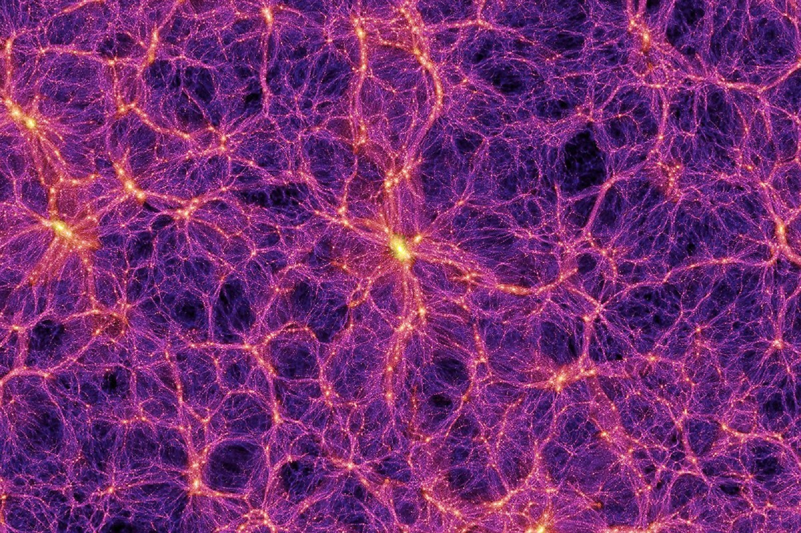
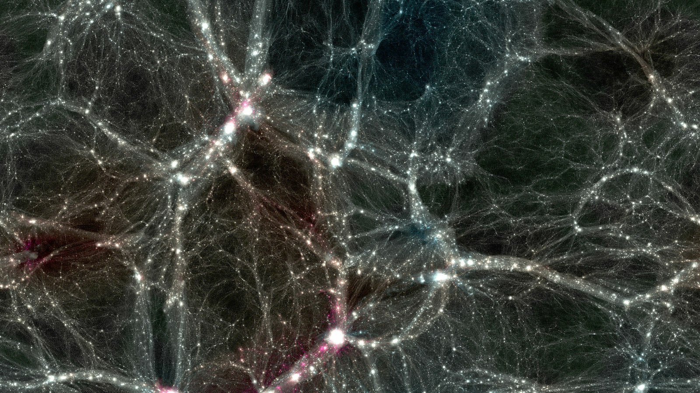
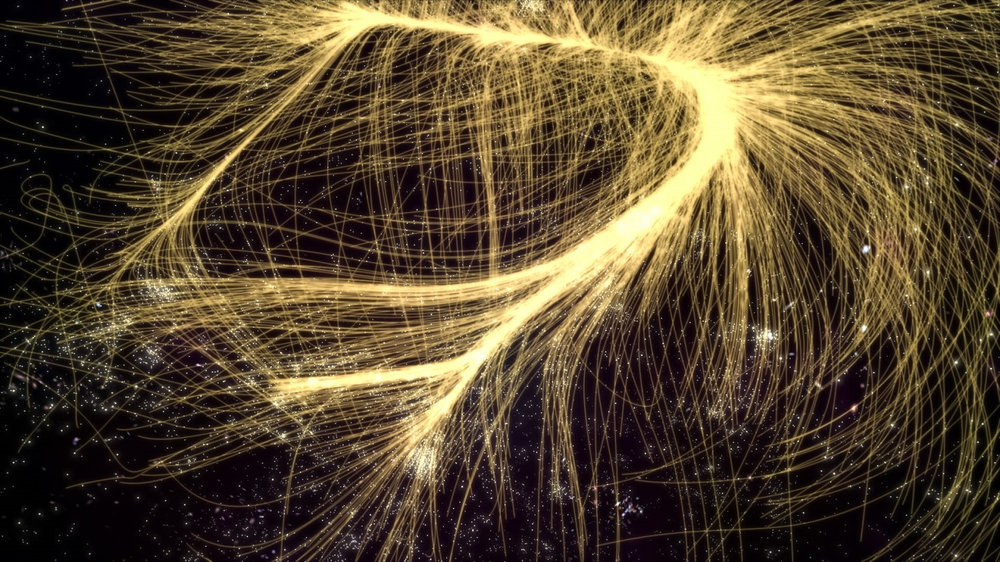
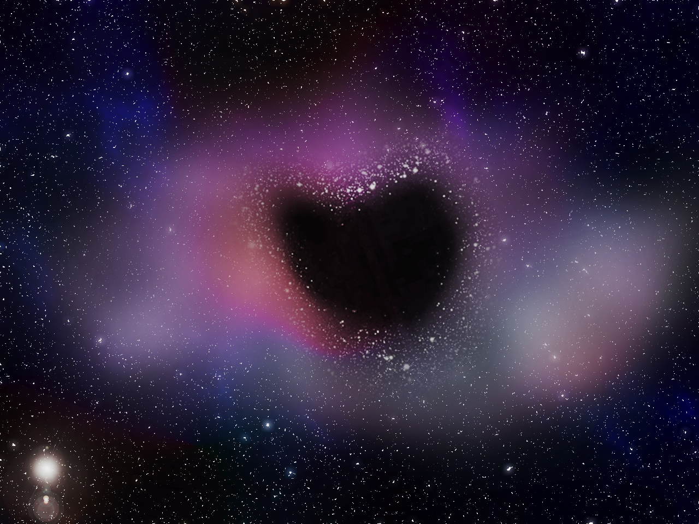
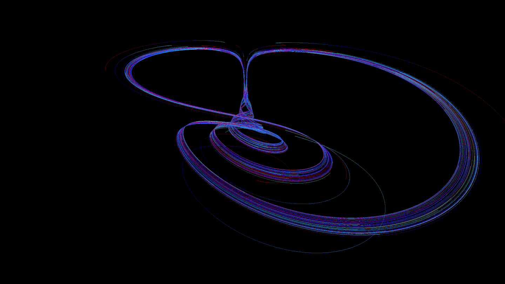
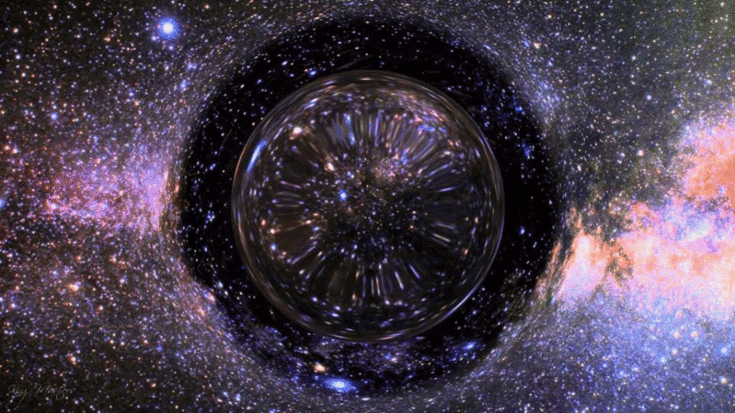

Самые глобальные объекты во Вселенной
Наверняка многие из вас задумавались, насколько красив и необъятен наш Мир. Косми́ческое простра́нство, ко́смос (др.-греч. κόσμος — «упорядоченность», «порядок») — относительно пустые участки Вселенной, которые лежат вне границ атмосфер небесных тел. Космос не является абсолютно пустым пространством: в нём есть, хотя и с очень низкой плотностью, межзвёздное вещество (преимущественно молекулы водорода), кислород в малых количествах (остаток после взрыва звезды), космические лучи и электромагнитное излучение, а также гипотетическая тёмная материя.
Чёткой границы не существует, атмосфера разрежается постепенно по мере удаления от земной поверхности, и до сих пор нет единого мнения, что считать фактором начала космоса. Если бы температура была постоянной, то давление бы изменялось по экспоненциальному закону от 100 кПа на уровне моря до нуля. Международная авиационная федерация в качестве рабочей границы между атмосферой и космосом установила высоту в 100 км (линия Кармана), потому что на этой высоте для создания подъёмной аэродинамической силы необходимо, чтобы летательный аппарат двигался с первой космической скоростью, из-за чего теряется смысл авиаполёта.
Ниже представлен Топ самых глобальных структур в космическом простанстве:
- 1.Великая Стена Слоуна
- 2.Великая Стена Геркулеса
- 3.Ланиакея
- 4.Пустота Волопаса
- 5.Великий Аттрактор
- 6.Квазары
- 7.Черная дыра
- 8.Кротовые норы
Великая стена Сло́уна (англ. Sloan Great Wall) — комплекс сверхскоплений галактик, простирающийся более чем на миллиард световых лет. Представляет собой плоскую структуру из галактик и пустот, третью по размеру из известных подобных структур во Вселенной (была первой до обнаружения в 2013 году Великой стены Геркулес — Северная Корона).
В длину «стена» простирается на 1,37 миллиарда световых лет. Располагается она приблизительно на расстоянии 1,2 миллиарда световых лет от Земли.
Великая стена Слоуна в 2,74 раза больше Великой стены CfA2, предыдущего рекордсмена по протяжённости. Радиусом она 1,38 млрд св. л. (1,3⋅1025 м, или 13 Им), что составляет примерно 1/60 от диаметра наблюдаемой Вселенной. Расположена в самой плотной области структур Вселенной, за ней следует Сверхскопление Девы — Волос Вероники (SCL 111).
Об открытии Великой стены Слоуна было объявлено 20 октября 2003 года учёными Дж. Ричардом Готтом и Марио Юричем из Принстонского университета. Это открытие было сделано благодаря данным Слоановского цифрового небесного обзора (SDSS).

Великая стена Геркулес — Северная Корона — огромная плоская суперструктура из галактик размером более 10 млрд световых лет, составляющая около 10 % от диаметра наблюдаемой Вселенной. Крупнейшая в наблюдаемой Вселенной крупномасштабная структура, открытая в ноябре 2013 года по результатам наблюдений за вспышками гамма-излучения, выполнявшихся в 1997—2012 годах Иштваном Хорватом и Жёлтом Багойем из Национального университета государственной службы в Будапеште (Венгрия), а также Йоном Хаккилой из Чарльстонского колледжа в Южной Каролине (США)
Всплески гамма-излучения являются самыми мощными выбросами энергии в наблюдаемой Вселенной и происходят на огромных и удалённых звёздах, вращающихся с высокой скоростью. Такие вспышки очень редки: в галактике размером с Млечный путь они происходят раз в несколько миллионов лет. Таким образом, вспышки являются количественными индикаторами интенсивности распада материи — то есть активности, присущей галактикам — и большое количество вспышек означает высокую концентрацию материи и, соответственно, наличие большого числа галактик.
В исследовании наблюдаемое небо было разделено на 9 частей, в каждой из которых исследовалась 31 вспышка гамма-излучения. В одной из этих частей 14 вспышек оказались распределёнными в области с угловым радиусом 45° и красным смещением от 1,5 до 2,0. Это означает, что в данном регионе находятся тысячи или даже миллионы галактик.
Обнаружение таких сверхбольших структур представляет собой проблему для современной космологии. Согласно космологическому принципу, на очень большом масштабе наблюдений Вселенная должна быть однородной и изотропной, то есть случайные флуктуации в массе и структуре материи между различными областями Вселенной должны быть очень незначительными. По современным представлениям, масштаб, на котором должна проявляться однородность, составляет 250—300 млн световых лет (так называемый «конец величия», англ. End of Greatness). Никакие неоднородные структуры бо́льших размеров не должны существовать. Однако уже обнаруженная в 2003 году Великая стена Слоуна имеет размер 1,37 млрд световых лет, в 4,5 раза больше предсказанного масштаба. Громадная группа квазаров имеет размер 4 млрд световых лет, что в 13,5 раза больше. Обнаружение же стены Геркулес-Северная Корона, неоднородной структуры размером более чем в 30 раз больше предсказанного масштаба, ставит под сомнение сам космологический принцип.
Кроме того, расстояние в 10 млрд световых лет означает, что мы наблюдаем данную структуру такой, какой она была 10 миллиардов лет назад, или спустя 3,79 миллиарда лет после Большого Взрыва. Существующие модели эволюции Вселенной не допускают формирование на этом этапе таких сложных и массивных структур. Пока не существует гипотезы, каким образом такая большая структура могла сформироваться за относительно короткий срок

Ланиакея (Ланиакеа) (англ. Laniakea, по-гавайски — «необъятные небеса») — сверхскопление галактик, в котором, в частности, содержатся Сверхскопление Девы (составной частью которого является Местная группа, содержащая галактику Млечный Путь с Солнечной системой) и Великий аттрактор, в котором расположен центр тяжести Ланиакеи.
Диаметр Ланиакеи примерно равен 520 миллионам световых лет. Ланиакея состоит примерно из 100 тысяч галактик, движущихся совместно к некоторой области в космосе, а масса её примерно равна 1017 массам Солнца (примерно в 100 раз больше массы Сверхскопления Девы). Соседним с Ланиакеей является сверхскопление Персея-Рыб из цепи Персея-Пегаса (входящей в Комплекс сверхскоплений Рыб-Кита). Ланиакея была выделена по согласованным траекториям галактик.
Первая (трёхмерная) карта Ланиакеи была создана к сентябрю 2014 года с помощью радиотелескопа Грин-Бэнк и других телескопов. Для построения карты использовался Cosmicflows-2 (каталог движений галактик)
В состав Ланиакеи входят:
- 1.Великий аттрактор
- 2.Скопление Насоса
- 3.Скопление Гидры
- 4.Скопление Центавра
- 5.Сверхскопление Павлина — Индейца

Войд Волопаса (англ. Boötes void)[1] — крупная, почти сферически-симметричная область пространства, содержащая малое количество галактик (войд). Расположен в созвездии Волопаса. Центр его имеет координаты α=14ч 50м и δ =46°
Диаметр войда оценивается в 330 млн световых лет[3] (примерно 0,27 % диаметра наблюдаемой Вселенной), объём составляет 236000 Мпк3, при этом войд Волопаса является одним из крупнейших войдов и иногда называется супервойдом. Об открытии войда сообщили Роберт Киршнер и коллеги (1981) в рамках обзора красных смещений. Центр войда Волопаса расположен на расстоянии около 700 млн св. лет от Солнца.
Другие астрономы вскоре обнаружили, что войд содержит несколько галактик. В 1987 году Р. Киршнер и коллеги опубликовали результаты исследования восьми галактик в войде. M. Strauss и J. Huchra анонсировали открытие ещё нескольких галактик в 1988 году, а Г. Алдеринг, Г. Ботун, Р. Киршнер и Р. Марцке в 1989 году заявили об открытии 15 галактик. К 1997 году стало известно о 60 галактиках в войде.
По словам Грегори Алдеринга, масштаб войда таков, что «если бы Млечный Путь находился в его центре, мы не узнали бы о существовании других галактик до 1960-х годов».
Сверхскопление Геркулеса образует часть ближнего края войда.
Таким образом, в войде было обнаружено только 60 галактик. Если воспользоваться грубой оценкой концентрации — 1 галактика в 10 млн световых лет, — то в войде должно располагаться около 2000 галактик. Не наблюдается видимых несоответствий между существованием войда Волопаса и моделью Лямбда-CDM. Существует теория о формировании войда Волопаса в результате слияния меньших войдов, это объясняет малое число галактик, населяющих вытянутую область вблизи середины войда

Вели́кий аттра́ктор (Великий центр притяжения, от англ. attract — «привлекать, притягивать, пленять») — гравитационная аномалия, расположенная в межгалактическом пространстве на расстоянии примерно 75 Мпк, или около 250 млн. световых лет от Земли в созвездии Наугольник. Этот объект, имеющий массу порядка 5⋅1016 M☉ (или 105 масс Млечного Пути), является, скорее всего, огромным сверхскоплением галактик. Средняя плотность вещества в районе Великого Аттрактора ненамного больше средней плотности Вселенной, но за счёт гигантских размеров его масса оказывается настолько велика, что не только наша звёздная система, но и другие галактики и их скопления поблизости (в том числе скопление Девы и ряд близких сверхскоплений) имеют пекулярные скорости, направленные на него, формируя огромный поток галактик. Эффект, который Аттрактор оказывает на движение наблюдаемых нами галактик и их скоплений на участке пространства протяжённостью в несколько сотен миллионов световых лет, и подтверждает его существование.
Центр Великого аттрактора — скопление Норма (ACO 3627, или Наугольник) в созвездии Наугольника — лежит на пересечении двух крупнейших структур, а именно стены Центавра, включающей сверхскопление Девы, скопление Центавра (Abell 3526) и собственно скопление Норма, и другой, простирающейся от скопления Павлина до сверхскопления Парусов. Иногда Великим аттрактором называют всю эту стену с центром в кластере ACO 3627, сам же он образует центр тяжести крупнейшей структуры Ланиакеа, в которую входит содержащее нашу галактику сверхскопление Девы
Необходимость существования некоего центра притяжения следовала из расхождения предсказанной в 1960-х годах и выявленной в 1970-х годах дипольной анизотропии реликтового излучения и известных на тот момент её источников — вращения Земли вместе с Солнцем вокруг центра Галактики в направлении созвездия Лебедя, а также движения в сторону созвездия Льва. Данные свидетельствовали о том, что наша галактика и её соседи, составляющие так называемую Местную Группу, а также скопление Девы, кроме взаимного движения, движутся со скоростью около 600 км/с в направлении созвездия Гидра. Суперпозиция скоростей движения к скоплению галактик в созвездии Девы и к Великому Аттрактору и даёт наблюдаемую скорость движения Млечного Пути относительно космической системы отсчёта, измеряемую по величине дипольной анизотропии реликтового излучения.
Таким образом учёные пришли к заключению о существовании Великого Аттрактора, находящегося на расстоянии около 60 Мпк, из столь огромного скопления материи, что его притяжение достаточно однородно, чтобы не разрывать гравитационную связь галактических скоплений между собой. Впервые гипотеза была высказана Аланом Дресслером в 1986 году. Прямое наблюдение Великого Аттрактора, однако, затруднено тем, что он находится в так называемой «зоне избегания», закрытой от наблюдения плоскостью Млечного пути с большим количеством звёзд и межзвёздной пыли; скопление вещества отчётливо прослеживается только путём радионаблюдений рентгеновских источников. В 1980-е годы с помощью радиотелескопов было открыто (первым в «зоне избегания») новое скопление на расстоянии 20 Мпк в созвездии Корма; учёт его влияния давал несколько лучшее согласие с положением космического фонового диполя. Хотя в этом предполагаемом направлении на Великий Аттрактор плотность видимых галактик и увеличивалась, скопление включало только 50 галактик, что не могло составлять достаточную массу для аттрактора. Лишь к концу 1990-х годов дальний обзор в оптическом диапазоне на различных телескопах, находящихся в южном полушарии, позволил учёным из Европейской южной обсерватории обнаружить ещё 600 галактик в этом скоплении. Это исследование показало, что центр Великого Аттрактора находится в кластере Норма (ACO 3627, или Наугольник) в созвездии Наугольник. Он напоминает скопление Кома (Волосы Вероники), в частности, имеет массу порядка 1015 M☉, или около 10000 масс нашей Галактики. Учёт его влияния уже позволил практически полностью объяснить наблюдаемые движения галактик в ближайшей Вселенной.
В прилегающих к Аттрактору областях Вселенной галактики обнаруживают крупномасштабное течение в его сторону. Многие галактики в составе самого кластера Наугольника движутся по направлению друг к другу, весь же он в целом находится, судя по всему, в покое относительно реликтового излучения. Однако потоки галактик, аналогичные падению нашей и других расположенных рядом систем на Великий Аттрактор, — это местные явления, существование которых не противоречит справедливости космологического принципа в больших масштабах, где отклонения от закона Хаббла сравнительно невелики.
Возможно, помимо Великого Аттрактора, свой вклад в наличие пекулярной скорости Местного сверхскопления вносит притяжение и других систем галактик: Местная группа находится также и в зоне притяжения сверхскопления Персея — Рыб, а также сверхскопления Шепли в созвездии Центавра (с центром в Abell 3558) в 400 миллионах световых лет от Земли. Существуют и данные, указывающие на присутствие других источников притяжения, скрытых за плоскостью Млечного Пути. Поскольку все зарегистрированные сверхскопления всё ещё не могут полностью объяснить движение Млечного пути, вероятно, что эти данные не полны. Большую роль также играет не до конца изученное распределение тёмной материи (центр тяжести её скоплений может не совпадать с центром тяжести местного сверхскопления), определяющее крупномасштабную структуру Вселенной

Кваза́р (англ. quasar) — класс астрономических объектов, являющихся одними из самых ярких (в абсолютном исчислении) в видимой Вселенной. Английский термин quasar образован от слов quasi-stellar («квазизвёздный» или «похожий на звезду») и radiosource («радиоисточник») и дословно означает «похожий на звезду радиоисточник».
Компактный квазар называется блазар.
По современным представлениям, квазары представляют собой активные ядра галактик на начальном этапе развития, в которых сверхмассивная чёрная дыра поглощает окружающее вещество, формируя аккреционный диск. Он и является источником излучения, исключительно мощного (иногда в десятки и сотни раз превышающего суммарную мощность всех звёзд таких галактик, как наша) и имеющего помимо космологического гравитационное красное смещение, предсказанное А. Эйнштейном в общей теории относительности (ОТО).
Квазары были обнаружены как объекты с большим красным смещением, имеющие электромагнитное излучение (включая радиоволны и видимый свет) и настолько малые угловые размеры, что в течение нескольких лет после открытия их не удавалось отличить от «точечных источников» — звёзд (напротив, протяжённые источники больше соответствуют галактикам[6]; звёздная величина самого яркого квазара +12,6, в то время как, для сравнения, звёздная величина самой яркой звезды −1,46). Следы родительских галактик вокруг квазаров (причём далеко не всех) были обнаружены лишь позднее.
Квазары обнаруживаются на очень широком диапазоне расстояний, и исследования по обнаружению квазаров показали, что в далеком прошлом активность квазаров была более распространенной. Пик эпохи квазарной активности был примерно 10 миллиардов лет назад.
Квазары называют маяками Вселенной. Они видны с огромных расстояний (вплоть до красного смещения, превышающего z = 7,5), по ним исследуют структуру и эволюцию Вселенной, определяют распределение вещества на луче зрения: сильные спектральные линии поглощения водорода разворачиваются в лес линий по красному смещению поглощающих облаков[14]. Ввиду большой удалённости квазары, в отличие от звёзд, выглядят практически неподвижными (не имеют параллакса), поэтому радиоизлучение квазара используется для высокоточного определения с Земли параметров траектории автоматической межпланетной станции.
По состоянию на конец 2017 года наиболее удалённым обнаруженным квазаром является ULAS J1342+0928 с красным смещением 7,54. Свет, наблюдаемый от этого квазара, был испущен, когда Вселенной было всего 690 миллионов лет. Сверхмассивная чёрная дыра в этом квазаре, оценённая в 800 миллионов солнечных масс, является самой отдалённой чёрной дырой, определённой на сегодняшний день.
В январе 2019 года было объявлено об обнаружении самого яркого квазара — его яркость оценивается в 600 трлн солнечных. Квазару присвоено имя J043947.08+163415.7, расстояние до объекта составляет примерно 12,8 млрд световых лет

Чёрная дыра́ — область пространства-времени, гравитационное притяжение которой настолько велико, что покинуть её не могут даже объекты, движущиеся со скоростью света, в том числе кванты самого света. Граница этой области называется горизонтом событий. В простейшем случае сферически симметричной чёрной дыры он представляет собой сферу с радиусом Шварцшильда, который считается характерным размером чёрной дыры.
Теоретическая возможность существования данных областей пространства-времени следует из некоторых точных решений уравнений Эйнштейна, первое из которых было получено Карлом Шварцшильдом в 1915 году. Изобретатель термина достоверно неизвестен, но само обозначение было популяризовано Джоном Арчибальдом Уилером и впервые публично употреблено в популярной лекции «Наша Вселенная: известное и неизвестное» (англ. Our Universe: the Known and Unknown) 29 декабря 1967 года. Ранее подобные астрофизические объекты называли «сколлапсировавшие звёзды» или «коллапсары» (от англ. collapsed stars), а также «застывшие звёзды» (англ. frozen stars).
Вопрос о реальном существовании чёрных дыр тесно связан с тем, насколько верна теория гравитации, из которой следует их существование. В современной физике стандартной теорией гравитации, лучше всего подтверждённой экспериментально, является общая теория относительности (ОТО), уверенно предсказывающая возможность образования чёрных дыр (но их существование возможно и в рамках других (не всех) моделей, см. Альтернативные теории гравитации). Поэтому наблюдаемые данные анализируются и интерпретируются, прежде всего, в контексте ОТО, хотя, строго говоря, эта теория пока не является интенсивно экспериментально протестированной для условий, соответствующих области пространства-времени в непосредственной близости от горизонта чёрных дыр звёздных масс (однако хорошо подтверждена в условиях, соответствующих сверхмассивным чёрным дырам, и с точностью до 94 % согласуется с первым гравитационно-волновым сигналом). Поэтому утверждения о непосредственных доказательствах существования чёрных дыр, в том числе и в этой статье ниже, строго говоря, следует понимать в смысле подтверждения существования астрономических объектов, таких плотных и массивных, а также обладающих некоторыми другими наблюдаемыми свойствами, что их можно интерпретировать как чёрные дыры общей теории относительности.
Кроме того, чёрными дырами часто называют объекты, не строго соответствующие данному выше определению, а лишь приближающиеся по своим свойствам к такой чёрной дыре — например, это могут быть коллапсирующие звёзды на поздних стадиях коллапса. В современной астрофизике этому различию не придаётся большого значения, так как наблюдаемые проявления «почти сколлапсировавшей» («замороженной») звезды и «настоящей» («извечной») чёрной дыры практически одинаковы. Это происходит потому, что отличия физических полей вокруг коллапсара от таковых для «извечной» чёрной дыры уменьшаются по степенным законам с характерным временем порядка гравитационного радиуса, делённого на скорость света — то есть за доли секунды для чёрных дыр звёздных масс и часы для сверхмассивных чёрных дыр.
10 апреля 2019 года впервые была «сфотографирована» сверхмассивная чёрная дыра в центре галактики Messier 87, расположенной на расстоянии 54 миллионов световых лет от Земли.
Различают четыре сценария образования чёрных дыр:
- 1.Гравитационный коллапс (сжатие) достаточно массивной звезды;
- 2.Коллапс центральной части галактики или протогалактического газа;
- 3.Формирование чёрных дыр сразу после Большого Взрыва (первичные чёрные дыры);
- 4.Возникновение в ядерных реакциях высоких энергий.

Крото́вая нора́, или «крото́вина»,«кротови́на», а также «червячный переход» или «червото́чина» (последнее является дословным переводом англ. wormhole) — топологическая особенность пространства-времени, представляющая собой в каждый момент времени «тоннель» в пространстве. Эти области могут быть как связаны и помимо кротовой норы, представляя собой области единого пространства (см. пример на рисунке ниже), так и полностью разъединены, представляя собой отдельные пространства, связанные между собой только посредством кротовой норы.
Кротовые норы согласуются с общей теорией относительности. Понятие кротовой норы включая её название (wormhole) ввёл в физику американский физик Джон Арчибальд Уилер.
Для упрощённого представления о кротовой норе пространство представляется как двумерная (2D) поверхность. В этом случае кротовая нора будет выглядеть как отверстие в этой поверхности, переходящее в трёхмерную трубу (внутреннюю поверхность цилиндра), а затем вновь появляться в другом месте на двухмерной поверхности с отверстием, похожим на вход. Отличие реальной кротовой норы заключалось бы в числе пространственных измерений, которых было бы три. Например, вместо круглых входных и выходных отверстий в 2D-плоскости были бы сферы в 3D-пространстве.
Другой способ представить себе кротовые норы — взять лист бумаги и нарисовать две отдалённые точки на одной стороне листа. Лист бумаги представляет плоскость в пространственно-временном континууме, а две точки представляют расстояние, которое необходимо пройти. Однако теоретически кротовая нора может соединить эти две точки, если сложить эту плоскость так, чтобы точки касались друг друга. Поскольку две точки теперь соприкасаются, то пересечь расстояние будет намного легче.
